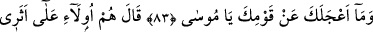
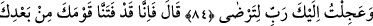
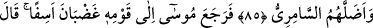
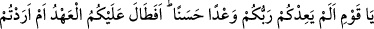
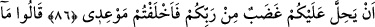
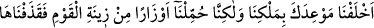
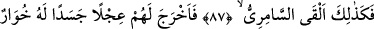
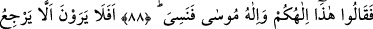
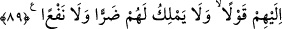

PUTLARIN GÜÇSÜZ OLDUĞUNU
GÖRMEZLER Mİ?
83. “Seni acele ile kavminden ayrılmaya sevk eden nedir, ey Mûsâ?”
84. Mûsâ: “İşte onlar da benim peşimdeler. Ben, memnun olasın diye sana acele
ile geldim Rabbim.” dedi.
85. Allah buyurdu: “Senden sonra biz, kavmini (Hârun ile kalan İsrailoğullarını)
imtihan ettik ve Sâmirî onları yoldan çıkardı.”
86. Bunun üzerine Mûsâ, öfkeli ve üzüntülü olarak kavmine döndü. “Ey kavmim!
Rabbiniz size güzel bir vaadde bulunmamış mıydı? Şu halde size zaman mı çok
uzun geldi, yoksa üstünüze Rabbinizin gadabının inmesini mi istediniz ki, bana olan
vâdinizden döndünüz?” dedi.
87. Dediler ki: “Biz sana olan vaadimizden, kendi kudret ve irademizle
dönmedik. Fakat biz, o kavmin (Mısırlıların) zinet eşyasından bir takım ağırlıklar
yüklenmiş, sonra da onları atmıştık; aynı şekilde Sâmirî de atmıştı.”
88. Bu adam, onlar için, böğürebilen bir buzağı heykeli icat etti. Bunun üzerine:
“İşte bu, sizin de, Mûsâ’nın da ilâhıdır. Fakat onu unuttu.” dediler.
89. O şeyin, kendilerine hiçbir sözle mukabele edemeyeceğini, kendilerine ne bir
zarar ne de bir fayda verme gücünde olmadığını görmezler mi?
Kendisi ile Tur dağında konuşmayı vaad etmemizin gereği olarak Mûsâ, mîkâta ilk
durduğunda ona dedik ki: “Seni acele ile kavminden ayrılmaya” seni acele etmeye ve
tek başına buraya gelmeye “sevk eden nedir, ey Mûsâ?” Mûsâ (a.s.)’la beraber Tur
dağına gelmek üzere seçilmiş yetmiş kişi vardı. Hz. Mûsâ bir an önce Allâh’a mülâkî